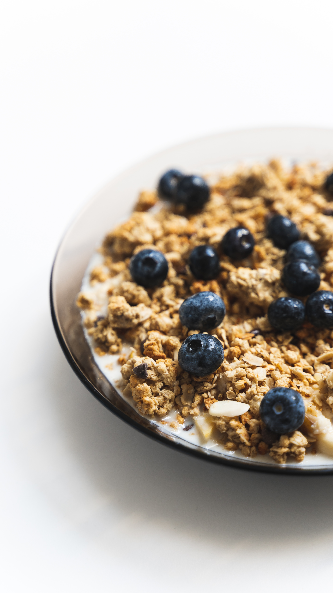

Blueberry Oatmeal

How to Make Blueberry Oatmeal
These breakfast bars are quick and easy to make. They freeze well and can be made with many combinations of fruits and nuts.
Ingredients
- Oats
- Eggs
- Flour
- Milk
- Vanilla
- Sugar
- Butter
- Baking Soda
- Blueberries
- Walnuts
- Coconut
Steps
- Preheat oven to 350 degrees F (175 degrees C). Grease an 8-inch square pan.
- Combine whole oats, oat flour, brown sugar, salt, and baking soda together in a bowl. Stir in almond milk, eggs, butter, and vanilla extract until well combined. Fold in blueberries and walnuts. Spread mixture into prepared square pan; top with shredded coconut.
- Bake in the preheated oven until edges are golden and coconut is brown; about 35 minutes. Cool in the pan for 10 minutes before cutting into squares.
- Serve hot